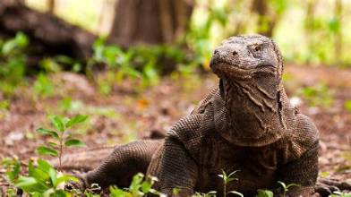

Keanekaragaman Fauna Nusantara
Fauna merujuk pada seluruh spesies hewan yang hidup di suatu wilayah. Berikut beberapa satwa langka khas Indonesia:

Nama Latin: Varanus komodoensis
Kadal terbesar di dunia yang hanya hidup di pulau-pulau Nusa Tenggara Timur, khususnya Pulau Komodo dan Rinca.

Nama Latin: Pongo
Kera besar berdada lebar dan berbulu kemerahan yang menghuni hutan hujan tropis Sumatra dan Kalimantan.

Nama Latin: Panthera tigris sumatrae
Subspesies harimau terakhir yang tersisa di Indonesia dengan loreng hitam yang sangat rapat dan berukuran tubuh paling kecil dibanding harimau lainnya.